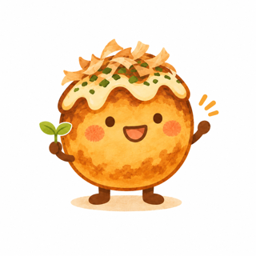
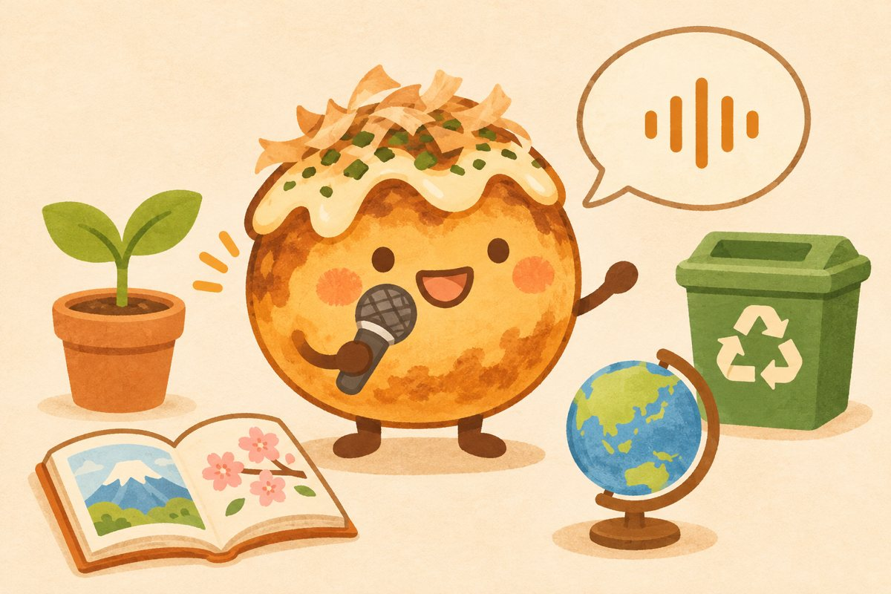
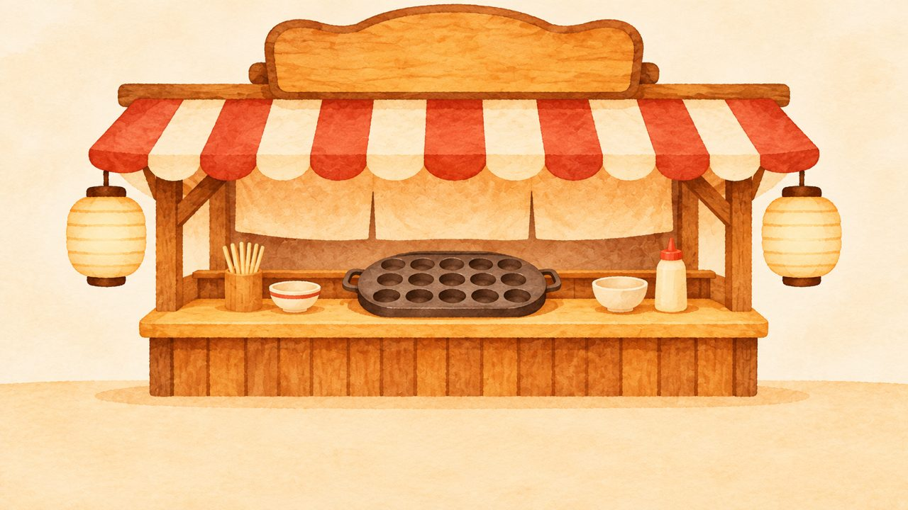

일본어 발음 연습 · 소리 내어 읽으면 인식 성공률을 판정합니다 (70% 이상 통과)

손님이 주문한 일본어 문장을 소리 내어 말하면, AI 음성인식이 알아듣고 철판에 다코야키가 구워져요. 10알을 구워 한 접시를 완성해 보세요!
· 이름이나 학번을 받지 않습니다. 연습 기록은 이 기기에만 남고, 어디로도 보내지 않습니다.
· 녹음 파일은 저장하지 않습니다. 말한 소리는 글자로 바뀐 뒤 바로 버려집니다.
※ 음성 인식은 기기·브라우저의 기능을 씁니다. 기기에 따라 소리가 인식 처리를 위해 브라우저 제공업체 서버로 전송될 수 있습니다.
· 기록은 [기록 보기 → 전체 기록 삭제]로 언제든 지울 수 있습니다.

인식 성공률은 발음을 목표 문장과 글자 단위로 비교해 계산합니다.